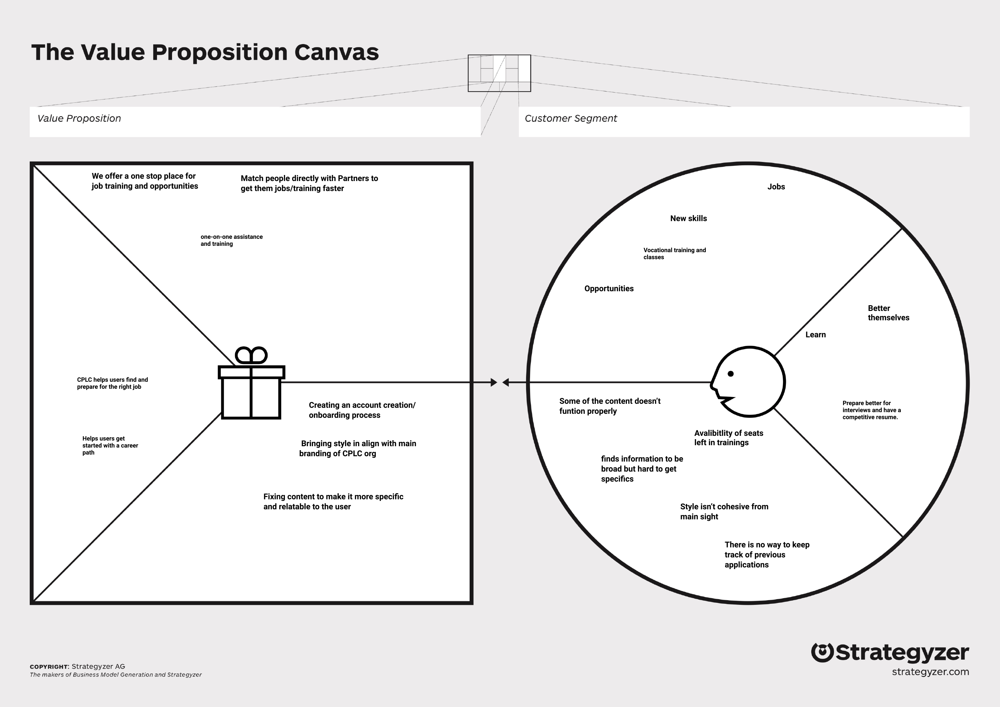
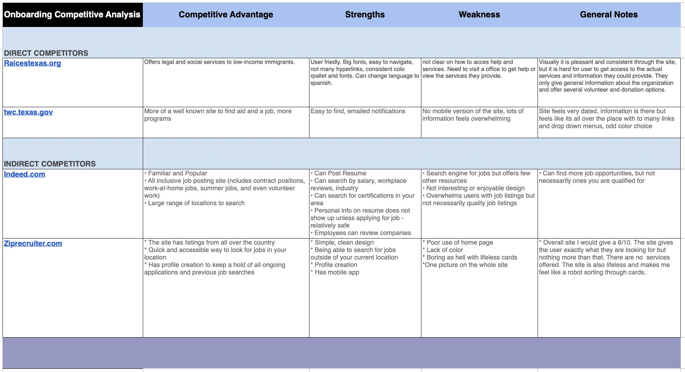
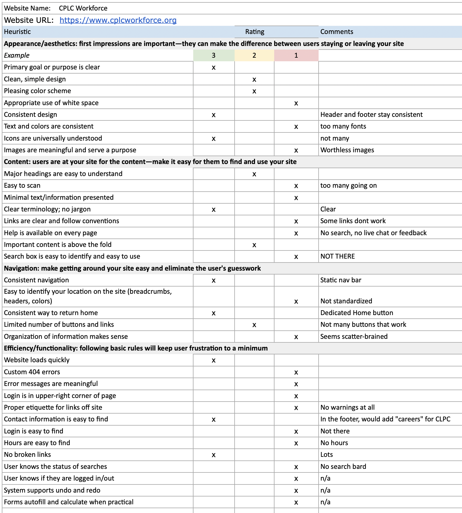
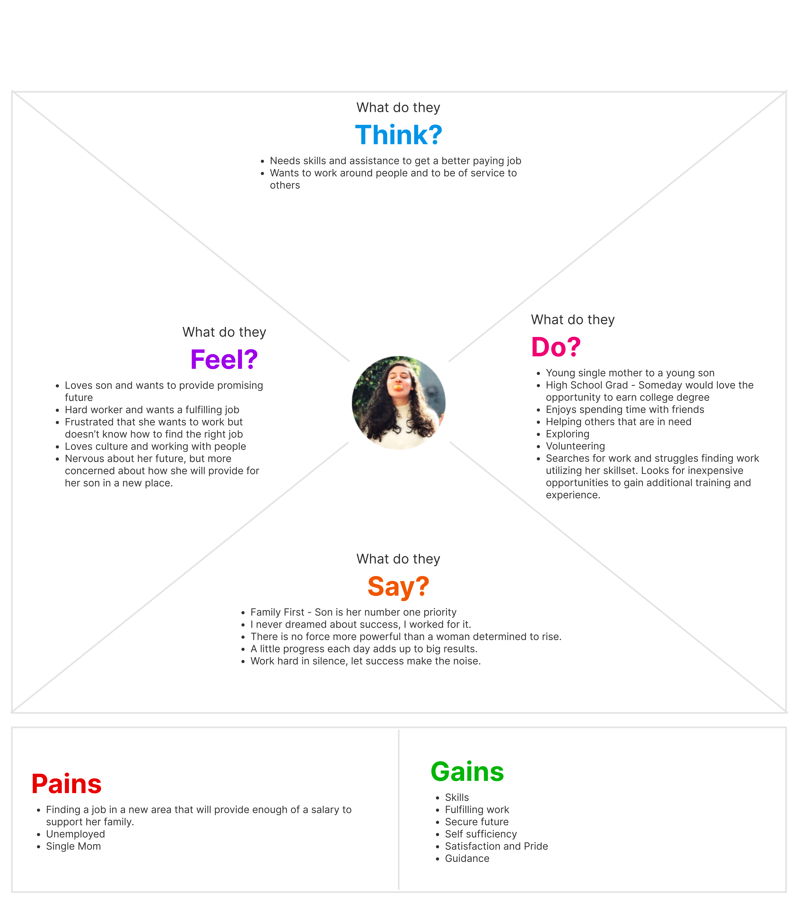
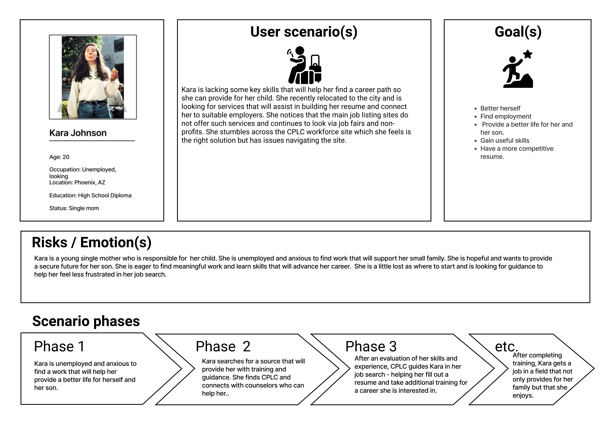
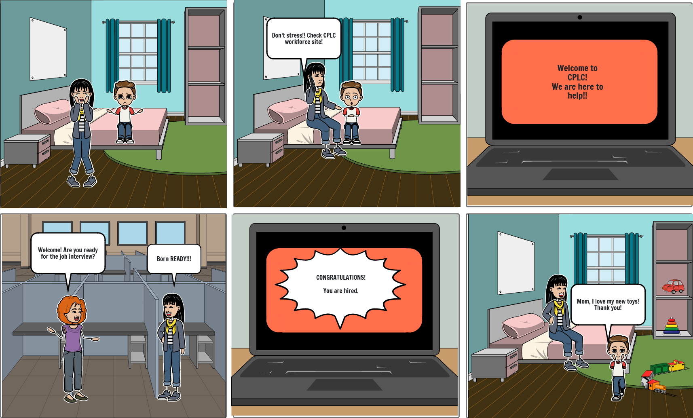

CPLC Workforce Solutions has the services and programs job seekers need to find, prepare for, and keep the right job. However, we have observed that our website isn’t meeting the standard brand guidelines and representation of the CPLC, which is impacting the amount of users we can reach. Users aren’t utilizing the services we offer because we haven’t communicated to our audience well. How might we improve the CPLC Workforce site so that our customers are successful based on the overall brand guidelines and mission?
USER RESEARCH
VALUE PROPOSITION
We started our redesign with user research. We spoke to a stakeholder at CPLC who said that the website didn’t provide users with an accurate description of the services they provided. While their social media does an excellent job promoting upcoming events, the website seems unfinished and not up to date.
We looked first at “competitors” who offered similar services. Our nonprofit isn’t competing with these companies, per se, but they offer similar services. What were their competitors strengths and weaknesses? How might we be inspired by learning about what users appreciated from those sites?

COMPETITOR ANALYSIS
From this analysis, we considered the site should have a profile for users to upload their resume, training and progress as they job hunt.
We next did a heuristic evaluation of the CPLC Workforce website. A few key points we pulled from this evaluation was that the homepage wasn’t entirely clear on what services the CPLC Workforce offered. A user has to navigate throughout several pages to see what training is available and when it is available. Many of the links don’t lead to content that is informative. Users struggling to navigate the site also didn’t have a search bar to help assist them in finding information they needed.

HEURISTIC EVALUATION
We tested users on the usability of the original design, and they confirmed what we also recognized. While the website navigation was consistent, users had to scan pages and click through several links to find what they were tasked to find.

EMPATHY MAP
Our proto persona is Kara, a young single mother looking for work in the Phoenix, Arizona area. She has completed high school but is looking for work that not only will provide enough money to support her and her toddler son, but also has potential for growth and gaining new skills. Kara has a love for people and is a hard worker, but she has struggled navigating the world of unemployment. She hopes to be self sufficient with a secure future but feels overwhelmed and unconfident due to her lack of training. She finds CPLC as a promising resource to help her find the perfect job.
We posted a survey to get even more feedback about how users viewed the website and what frustrations they run into as they look for work. How might we connect the dots between people searching for employment and the resources and employers who provide training and opportunity?
IDEATION/BRAINSTORMING
We began the ideation process with a user scenario.
Kara, unemployed with a young son, recently relocated to Phoenix and is looking for services that will assist in building her resume and connect her to suitable employers. She notices that the main job listing sites do not offer those services and continues to look for jobs via fairs and non profits. She stumbles across the CPLC workforce website and feels this is the right solution. She is excited but has trouble navigating the site. This is frustrating for her because she knows CPLC is the answer to her search, she just isn’t getting the information she needs from their website. Kara does get help from CPLC and gets connected to a counselor who advises her on how to write the best resume and gain skills needed for employment. After completing training, Kara gets a job that not only provides for her family, but she gets a job she enjoys, takes pride in, and utilizes her strengths. She feels confident for the future of her small family.
User Scenario
User Storyboard
We began with sketches of what the site could possibly look like. We designed mobile first with the intention of the site being responsive.
Our sketches were similar enough that we quickly moved forward into midfi prototyping.
In reviewing the current website design, we began the “I Like, I Wish, What If” design thinking process. From that, we designed a feature priority matrix to help us prioritize which features we should focus on at this point in redesign.
INFORMATION ARCHITECTURE

I LIKE, I WISH, WHAT IF DESIGN THINKING
PRIORITY FEATURE MATRIX
We reviewed what the current website offers and did a card sort on how we felt the site should be navigated. We chose four categories: Academic, Job Opportunities, Programs and Services.
CARD SORTING
From our card sorting activity, we designed our original site map, focusing on what we think are user priorities: job opportunities, services provided, programs provided, and academic opportunities.
CPLC SITE MAP
UI PROTOTYPING/ITERATIONS
From our sketches we put together a lofi clickable prototype.
LOFI CLICKABLE PROTOTYPE
LOFI MOBILE PROTOTYPE
As we moved into a mid/hifi prototype we made adjustments based off user testing. Below is an example of our navigation iterations.
LOFI DROPDOWN NAV
MID DROPDOWN NAV
HIFI DROPDOWN NAV
LOFI MOBILE
MIDFI MOBILE
HIFI MOBILE
HIFI MOBILE PROTOTYPE
UI STYLE GUIDE DESIGN
This is a link to the InVision UI Style Guide Inspiration
We pulled from a variety of inspiration to come up with this stylesheet. The pages are primarily monochromatic tones based off the pantone orange used in the logo. They type chosen is inspired by current branding for CPLC.
UI Testing
From our user testing, we learned the original site had trouble conveying what services were offered. Many of the links did not function. Others had to be clicked through several pages before finding worthwhile content. The navigation was consistent, but a user had no search bar if they struggled navigating. We added a search bar and created a navigation that made more sense after doing our card sort. Our users then suggested we add a Spanish translation option. They also asked the mission statement of the organization to be very evident right from the homepage.
The Solution
>This recording demonstrates the navigation system we created for the mobile website. This is a link to our hifi prototype.
In Summary
Future opportunities include providing a translate option within the site itself. Although users can navigate to pages through the main nav, they really rely on the back button. Given more time, we would like to continue to work out the form submission and specialized news letter option.